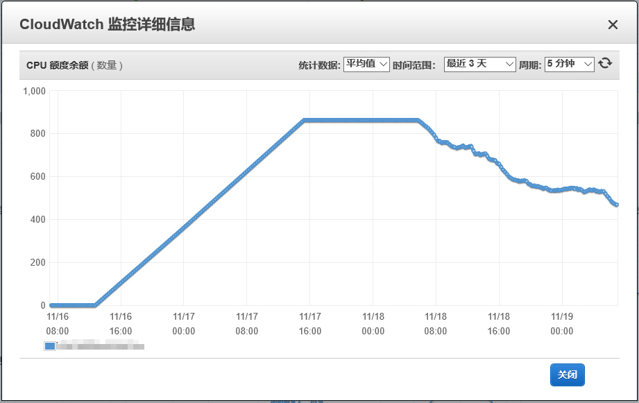

- 00 开篇词 云计算，这是开发者最好的时代.md.html
- 01 区域和可用区：欢迎来到云端数据中心.md.html
- 02 云虚拟机（一）：云端“攒机”，有哪些容易忽视的要点？.md.html
- 03 云虚拟机（二）：眼花缭乱的虚拟机型号，我该如何选择？.md.html
- 04 云虚拟机（三）：老板要求省省省，有哪些妙招？.md.html
- 05 云硬盘：云上IO到底给不给力？.md.html
- 06 云上虚拟网络：开合有度，编织无形之网.md.html
- 07 云端架构最佳实践：与故障同舞，与伸缩共生.md.html
- 08 云上运维：云端究竟需不需要运维？需要怎样的运维？.md.html
- 09 什么是PaaS？怎样深入理解和评估PaaS？.md.html
- 10 对象存储：看似简单的存储服务都有哪些玄机？.md.html
- 11 应用托管服务：Web应用怎样在云上安家？.md.html
- 12 云数据库：高歌猛进的数据库“新贵”.md.html
- 13 云上大数据：云计算遇上大数据，为什么堪称天作之合？.md.html
- 14 云上容器服务：从Docker到Kubernetes，迎接云原生浪潮.md.html
- 15 无服务器计算：追求极致效率的多面手.md.html
- 16 云上AI服务：云AI能从哪些方面帮助构建智能应用？.md.html
- 结束语 与云计算一起，迈向未来.md.html
- 捐赠
04 云虚拟机（三）：老板要求省省省，有哪些妙招？
你好，我是何恺铎。让我们继续云虚拟机的话题。今天这一讲，我想从一个不一样的视角，也是你会很感兴趣的一个角度来进行讨论，那就是成本。
的确，很多时候，我们上云的障碍是在于价格。
打个比方吧，假设我们要为公司的业务上云进行虚拟机采购，这时如果你只是简单地将物理服务器的报价，与按量付费模式下的“通用型”云虚拟机进行对比，那你很容易就会得出云上机器太贵的结论。
但其实呢，在云上，我们有很多实用的招数来控制虚拟机的成本，是可以“少花钱、多办事”的。
那么，都有哪些省钱的妙招呢？今天我就来“偷偷”告诉你。
省钱妙招之一：使用包年包月机型
包年包月，可能是我们最先会想到的降低成本的办法了。
顾名思义，包年包月就是我们要提前预估好自己虚拟机的使用时间，比如半年、一年甚至三年，并提前支付相关款项的一种购买方式。这样的购买方式，通常能够给你带来较大幅度的折扣，帮你显著地节约成本。
云厂商其实是鼓励和欢迎虚拟机包年的，因为这样降低了云端动态租用的不确定性，减少了服务器空置的情况，也为厂商做中长期的数据中心容量规划提供了便利。另外一方面，包年包月一般都是先付费的模式，所以从财务层面上看，也有利于厂商的现金流。这些都是采用包年包月方式能够获得让利的原因。
在许多国内云厂商的虚拟机创建界面上，包年包月甚至成为了默认的选项，你需要注意在界面下方选择购买的时长。时长越长，你能获得的折扣越大。
那么，包年包月具体能帮我们省多少呢？这没有一个唯一确定的答案。因为，不同的云、不同的区域以不同的时长购买，折扣力度都可能有所不同。通常来讲，一般常见的机型在3~7折不等。
不过，在包年包月的模式下，也有一些你需要注意的问题。
首先，这个模式意味着我们牺牲了一些资源安排上的灵活性。因为在它到期之前，你一般是无法取消的，或者在某些云上，即便是允许你取消，也需要扣除一部分费用，这就像我们买了保险后中途退保一样，就要承担一些损失。
另外，包年机给我们带来了一个后续维护工作：续费管理。尤其是当包年虚拟机的数量陆陆续续变多时，由于创建时间不同，到期时间也就比较分散，那么续费的工作就变得更加复杂和重要起来。如果忘记续费，过了缓冲期后，机器会被自动关闭甚至删除，那就会影响业务的连续性。这是你需要小心的一个地方，千万不要错过云上的续费提醒。
省钱妙招之二：使用竞价实例
相比包年包月的广为人知，竞价实例（Spot Instances）的知名度似乎小一些。但如果运用得当，竞价实例其实威力巨大，这也是我十分推荐你去尝试和使用的一种省钱的办法，因为它往往能够提供相当大幅度的折扣。
竞价实例，是AWS所首创的产品形式，其他的云厂商近几年也在纷纷跟进。它的基本原理是，把云数据中心上闲置的机器资源拿出来，进行公开的拍卖，价高者得。让“市场机制”，也就是各个用户，来主导这些闲置资源的定价。
因为是闲置资源，所以大家的出价都会比较低，颇有一点共同来“薅羊毛”的意思。所以在很多时候，你甚至能够拿到相对标准按时计费价格1~2折的折扣力度，这无疑是非常有诱惑力的。而对于厂商而言，这也不是什么坏事，因为这些资源本就闲置，还不如顺水推舟、对外开放，以获得一些回报。所以说，竞价实例，是一个伟大的发明，是一种双赢的机制。
但也因为是闲置资源，所以它主要的限制在于可能会被随时回收。
当数据中心的闲置资源不足时，比如说，有人要创建大批更高优先级的、“正牌”的非竞价实例，或者当竞价市场涌入大量土豪，推动市场价格高于你的最高出价时，你的虚拟机就会被停止运行，并自动回收（一般会有一个提前数分钟通知的机制）。
因此，竞价实例能够有较低折扣的本质，是在于牺牲了稳定性。所以，你在使用竞价实例时，还需要注意选择场合。生为竞价实例，就要时刻有“退位让贤”的觉悟和准备。
如果你要搭建一个对外服务的网站，或者是数据库的话，这些需要24小时不间断运行的生产负载，就并不适合跑在竞价实例上。竞价实例非常适合的应用场景，包括一些后台批量计算、爬虫、性能测试等等。这些无持久化状态、可打断的工作，今后你可以第一时间想到用竞价实例来支撑。
竞价实例也是按照运行时间来付费的，你可以随时主动关闭和终止。所以，这种方式的动态性还是不错的，你可以随时按需启停。
小提示：在实操时，你需要注意一下在创建界面上选择竞价的策略。常见的竞价方式有两种，一种是手动设定你所能接受的最高价格，一种则是选择跟随市场价格的变动，也即自动出价。这和我们买卖股票时的操作选择很类似。
省钱妙招之三：使用突发性能类型
对于一台固定配置的服务器来说，总是会或多或少地存在资源闲置的情况。比如说，我们为了潜在的工作负载，申请了比较强劲的CPU资源，但也就是在业务高峰到来的时候，服务器才能够发挥出全部实力。而在相对长得多的业务低谷期，机器的CPU资源利用率其实会比较低。
因此，我们常常可以见到一些服务器CPU平均使用率非常低下，这显然是一种巨大的成本浪费。
而云端的架构，天生就善于解决资源闲置问题。
一种解决方法是，我们可以使用可动态调整规模的集群，来应对弹性计算场景，这样可以灵活设定动态扩缩容的机制，以达到减少低谷期资源占用的目的（我会在后面的架构部分进行专门讨论）；而另一种方法则更加简单，且适用于单机，那就是采用突发性能类型（Burstable Performance Instances）。这是一种非常实用而又有趣的虚拟机类型，有时它也被称为“可突增性能实例”。
突发性能类型同样拥有指定的vCPU数量、内存大小等配置，但其成本显著小于类似配置的其他类型机器。它的主要区别在于，这种类型的虚拟机的CPU性能表现，采用的是积分制，其积分会随着时间的推移匀速累加，也会随着算力的输出而被不断消耗。
当积分充裕时，CPU可按需跑满，达到CPU性能的100%，同时会较快地消耗积分；当积分不足或耗尽时，则CPU只能发挥出标称值的一小部分性能。这个小部分的比例值，我们称它为性能基准，它与积分匀速累加的速度相一致。
小提示：突发性能实例的性能基准，通常在峰值的5%~40%不等，具体比例按不同云厂商不同实例而定，你可以查询官方文档进行确认。
我们可以把突发性能类型，理解为性能有一定折扣和弹性的机型。
当重型计算负载来临时，积分的存在和积累，使得这些机器具备自动消耗积分，并获得临时“突增”性能的能力。就像是汽车的发动机，可以通过“涡轮增压”获得短时动力，来增强汽车的输出功率一样。
积分的积累虽然会有一个上限，但一般也足够它全速计算数个小时了。下图中，我给出了一个实际场景中某突发性能VM实例的积分曲线，你可以看到积分额度在匀速积累、到达上限，以及开始消耗的全过程：

AWS突增性能类型的CPU积分曲线示例
再回到我前面所说的波峰波谷计算场景，很显然，突发性能实例的积分制特性，恰好可以大显身手。比如，对于符合流量自然特征的互联网业务来说，在负载较低的深夜和清晨，性能突增实例处于较低的CPU占用率状态，同时积攒积分；当白天流量高峰到来时，CPU则可以消耗积分，发挥其全部性能，保障业务稳定运行。
性能突增类型目前在各大云上已经比较常见了，在AWS和阿里云上对应的是T系列虚拟机，在微软Azure上则对应B系列。
从成本上来看，突发性能实例和相同配置的通用机型相比，典型情况下，其折扣大约可以达到六折或更低。所以说，性能突增类型虚拟机的引入，非常有助于提高资源利用效率，推荐你在负载具有时效性的情况下酌情选用。
省钱妙招之四：使用ARM实例
说到ARM处理器，相信你并不陌生。随着移动互联网的高速发展和智能手机的普及，ARM早已走进千家万户。而且在庞大的手机市场的催化下，ARM芯片的性能也在不断地取得突破，开始接近甚至达到x86处理器的水平。
在移动端取得了统治性的地位后，踌躇满志的ARM开始进军服务器端。低功耗、高性价比成为它开拓市场的法宝。而极具规模效应的云计算，又可以说是ARM服务器芯片的最佳试验田。
所以，使用ARM架构芯片的虚拟机实例，已经成为云计算IaaS层不容忽视的新潮流。
同时，因为ARM是一个相对开放的架构，具备芯片设计和制造能力的大厂商，就纷纷开始自建芯片。厂商通过自行定制，就可以针对云上场景和需求进行优化，进一步降低单位算力的成本，巩固自己的竞争优势。
举个例子，AWS近些年就在大手笔地投入它自家基于ARM的Graviton处理器。在re:Invent 2018大会上，推出了第一款基于Graviton的A1类型EC2实例，而在re:Invent 2019大会上，AWS更是再接再厉，发布了基于第二代7纳米Graviton芯片的M6g、R6g、C6g全系列的虚拟机服务。这里的后缀g就代表Graviton。
在国内，也有像阿里、华为这样具备端到端硬件研发能力的巨头，在进行芯片自研，并在云端开始落地商业化。比如，华为在2019年发布了基于ARM的鲲鹏920处理器，性能十分强大，也达到了世界领先水平。与之匹配，华为云也推出了搭载鲲鹏处理器的KC1系列的虚拟机。
那么，使用ARM处理器的机型，对用户来说有什么吸引力呢？
答案同样是成本。根据厂商的测算，输出相同性能的ARM机型，能够帮助用户节省30%~40%的成本，这当然也是得益于ARM处理器的高性价比特点。所以说，它是我们节约成本的又一个有力手段。
今天我们的实操部分，就来尝试一下风头正劲的鲲鹏云虚拟机。
我在华为云的北京四区创建了一台kc1.large.2的双核4G机型，操作系统选择了Ubuntu 18.04的ARM版。创建的过程和普通x86虚拟机类似，这里就略去不表了。
机器启动后，我们通过SSH登录上去，查看系统信息：
root@ecs-kc1-large-2-linux-20200115174501:~# uname -a
Linux ecs-kc1-large-2-linux-20200115174501 4.15.0-70-generic #79-Ubuntu SMP Tue Nov 12 10:36:10 UTC 2019 aarch64 aarch64 aarch64 GNU/Linux
嗯，这是如假包换的ARM架构！用Linux自带的bc命令来简单算个Pi值，跑个分：
root@ecs-kc1-large-2-linux-20200115174501:~# time echo "scale=5000; 4*a(1)" | bc -l -q
3.141592653589793238462643383279502884197169399375105820974944592307\
81640628620899862803482534211706798214808651328230664709384460955058\
...
...
74351362222477158915049530984448933309634087807693259939780541934144\
73774418426312986080998886874132604720
real 0m22.325s
user 0m22.316s
sys 0m0.009s
我们可以看到，机器仅用了22秒就完成了精确到小数点后5000位的PI值，成绩还是相当不错的。
注意：这里使用bc命令以及其中的三角函数来计算Pi值，只是直观展示CPU能力的简便方法。结果仅供参考，不推荐这个方法作为严肃性能测试的依据。
不过，你可能会有点担心ARM在服务器端的软件生态。诚然，ARM体系结构下的软件，的确比不上x86架构那样丰富，但在近年相关厂商的大力推动下，其实已经取得了长足的进展。比如，在我们这台KC1服务器的Linux操作系统中，已经默认安装了Java、 Python等语言和运行环境。你甚至可以使用apt包管理器来安装Docker，并在ARM服务器内运行Docker容器，你可以参考下面给出的示例：
root@ecs-kc1-large-2-linux-20200115174501:~# docker run hello-world
Hello from Docker!
This message shows that your installation appears to be working correctly.
To generate this message, Docker took the following steps:
...
...
For more examples and ideas, visit:
https://docs.docker.com/get-starte
这简直太棒了，这意味着ARM服务器同样可以支撑容器，我们可以在上面跑微服务！这会为各种应用在ARM上的部署打开方便之门。
所以说，云计算让ARM服务器这个看起来比较遥远的事情，变成了触手可及的现实。随着华为鲲鹏等相关计算生态的不断成熟，基于ARM的虚拟机系列，也会越来越成为我们在注重成本控制时的一个有力选择。
课堂总结与思考
今天，我们详细讨论了在云上使用虚拟机时，可以运用的一些节省成本的思路和方法。它们原理不同，各有利弊。
- 包年包月的付费方式是最常见的降低虚拟机使用成本的方法，它通过牺牲采购的灵活性来换取折扣。
- 竞价实例的机制让云端的闲置资源对外开放，基于市场竞拍的定价方式，常常能够让我们获得很大的折扣。这种方法主要是通过牺牲稳定性，来换取成本上的节约。
- 突发性能实例是一种特殊的使用CPU积分制的机型，相对标准机型成本较低，适合工作负载存在较大波动的场景。它主要牺牲的是性能。
- 基于ARM的虚拟机实例已陆续走向市场，随着生态的不断成熟，也将成为低成本机型中非常具有竞争力的选择。这种方法主要在生态和兼容性方面存在一些限制。
结合起来不难看到，第一、二种方法，是在购买模式层面的调整和创新；而第三、第四种方法，是在机型选择方面，拓宽了我们的思路。有时，这两个层面的方法是可以组合起来使用的。比如，我就曾经在AWS云上使用Spot Instance的竞价方式，启动了一批T系列的突发性能实例，取得了很好的业务效果。
好了，这一讲就到这里。今天我留给你的思考题是：
- 与包年包月类似的预付费折扣，还有一种叫做“预留实例”（Reserved Instance）的模式。你能说说它和包年包月的不同之处，以及独特的优势是什么吗？
- 在有些云上创建突发性能实例时，还会有一个“无性能约束模式”的高级选项。你知道这个高级选项勾选后有什么作用，能解决什么问题吗？
欢迎你给我留言，我会尽快给你反馈。如果觉得有收获，也欢迎把这篇文章分享给你的朋友。感谢阅读，我们下期再见。
© 2019 - 2023 Liangliang Lee. Powered by gin and hexo-theme-book.